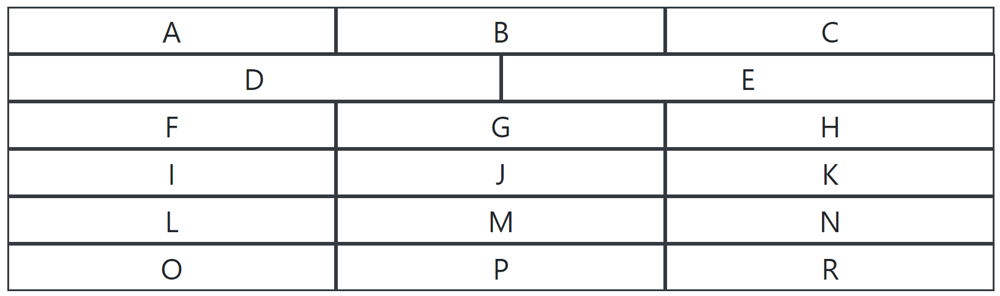
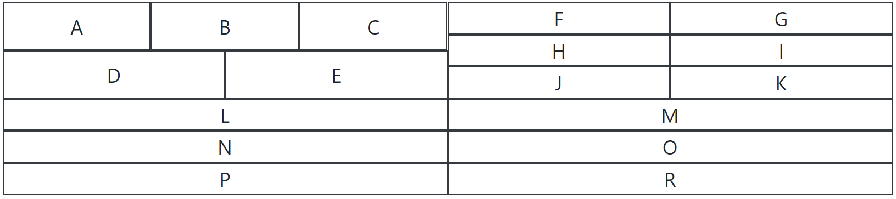
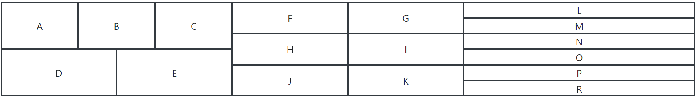

Bootstrap grid system
DokumentacijaStulpelių aukščiaims sukurkite savo klases ir jas pritaikykite. Fonams naudokite 8 bootstrap fono spalvas
Užduotys su panaudoujant .row, .col ir .col-{1-12} variacijas
- Atvaizduokite 4 vienodo ploto stulpelius eilutėje.
- Atvaizduokite 3 vienodo ploto stulpelius eilutėje.
- Atvaizduokite 2 stulpelius eilutėje santykiu 1:2.
- Atvaizduokite 3 stulpelius eilutėje santykiu 2:1:1.
- Atvaizduokite 4 stulpelius eilutėje santykiu 3:1:1:1.
- Atvaizduokite 4 stulpelius. Paskutiniam stulpeliui išskirkite 2/3 ploto o likusiems išdalinkite plotą po lygiai.
- Atvaizduokite 3 eilutes po 2 stulpelius, kurie užimtų po pusę eilutės pločio.
- Atvaizduokite 9 lygius stulpelius 3 eilutėse.
- Atvaizduokite 9 stulpelius 3 eilutėse, kur pirmasis eilutės stulpelis užimtų 2/3 ploto.
Grid system responsive užduotys: .col-{1-size-12}
- Atvaizduokite 2 stulpelius eilutėje. Kurie ant sm ir xs ekranų užims po atskirą eilutę.
- Atvaizduokite 3 stulpelius eilutėje. Kurie ant sm ir xs ekranų užims po atskirą eilutę.
- Atvaizduokite 3 stulpelius eilutėje. Kur ant sm ir xs ekranų pirmasis užims visą eilutę, o likę pasidalis antrąją pusiau.
- Atvaizduokite 3 stulpelius eilutėje. Kur ant sm ir xs ekranų paskutinis stulpelis užims visą eilutę, o likę pasidalis antrąją santykiu 1:2 atitinkamai.
- Atvaizduokite 12 stulpelių kurie užims skirtingus eilutės pločius prie ekranų dydžių atitinkamai:
- Nuo xs iki sm - stulpelis per visą eilutę
- Nuo md - 2 sulpeliai eilutėje
- Nuo lg - 3 stulpeliai eilutėje
- Nuo xl - 4 stulpeliai eilutėje
Grid system kompleksinės užduotys kuriant eilutes stulpeliuose: .row>.col-{1-12}+col{1-12}>.row.col-{1-12}*x
- Atvaizduokite pusės pločio stulpelį-bloką kairėje pusėje, o dešinėje 2 eilutes po pusę stulpelio-bloko aukčio
- Atvaizduokite pusės pločio stulpelį-bloką dešinėje pusėje, o kairėje 3 eilutes po trečdalį stulpelio-bloko aukčio
- Atvaizduokite pusės pločio stulpelį-bloką kairėje pusėje, o dešinėje 2 eilutes po pusę stulpelio-bloko aukčio, kuriose būtų po 3 stulpelius
- Atvaizduokite pusės pločio stulpelį-bloką dešinėje pusėje, o kairėje 3 eilutes po trečdalį stulpelio-bloko aukčio, kuriose būtų po 2 stulpelius
Grid system kompleksinės užduotys
1. Atvaizduokite kaip pateikta paveikslėliuose, ant skirtingų ekrano dydžių
Iki MD
Nuo MD
Nuo XL
2. Panaudodami grid system atvaizduokite (be tarpų)

3. Panaudodami grid system atvaizduokite (su tarpais)